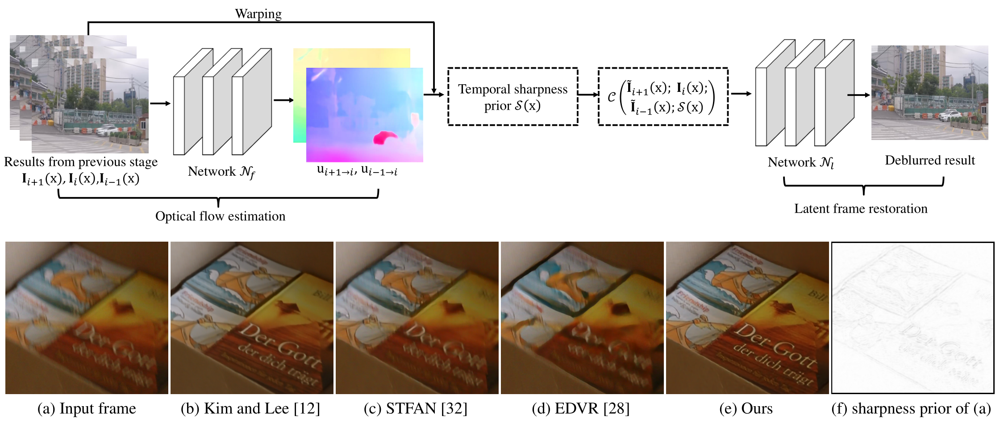

Ph.D candidate at Nanjing University of Science and Technology
Supervised by
Prof. Jinshan Pan
E-mail:
baihaoran@njust.edu.cn
hrbai.cs@gmail.com
I am currently a Ph.D candidate in School of Computer Science and Engineering, Nanjing University of Science and Technology, China.
My research interest includes image dehazing, image/video enhancement and analysis, and related vision problems.

Jinshan Pan, Haoran Bai, and Jinhui Tang, "Cascaded Deep Video Deblurring Using Temporal Sharpness Prior", IEEE Conference on Computer Vision and Pattern Recognition (CVPR), 2020.
[Project]
[Papar]
[Code]